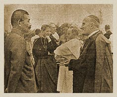

|
j
a v a s c r i p t |
February 21, 1943
Spent all day in Baclaran with the Rickards-Sotelo crowd — swimming, dancing, eating and chatting — it was my birthday after all.

"The Sword and the Cross"
"General Tanaka Urges Catholics to Work for Independence" — with front-page pictures of Tanaka talking to the Vatican's Piani and Archbishops O'Doherty and Guerrero. Tanaka warmly thanked the Catholics assembled for their presence and emphasized that the Japanese army would do all in their power to give protection and help to the Catholic mission so long as the Catholic Church does not run counter to the aim and policies of the Administration. The Apostolic Delegate warmly thanked Tanaka and replied diplomatically: "Our Catholic Church will never fail in giving all her cooperation, according to her divine mission, for the prosperity and progress in these islands." I guess Tanaka lost this particular battle of wits. |
|
|
|
|